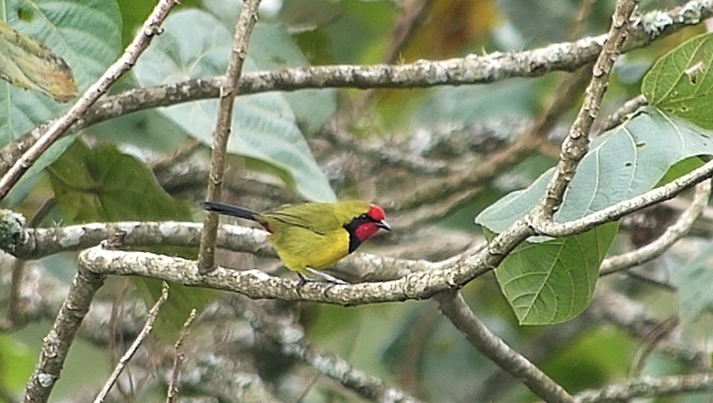

From: Brian Finch <birdfinch@gmail.com>
Date: 2014-06-01 13:34
Subject: Gatamaiyu and Manguo 30th May 2014
Dear All,
Rupert Watson kindly conveyed Adam Kennedy, Karen Plumbe and myself to
Gatamaiyu Forest on 30th May.
We first stopped off at Manguo Ponds arriving at 7.45am, delaying our
arrival at the forest because it looked very cloudy and we thought a
later arrival would be more worthwhile.
Plenty of waterbirds, male female and what looked like a juvenile
Maccoa Ducks, but White-back numbers seem to have dropped
considerably, yet conditions still look ideal. Plenty of parading
Swamphens, and the usual resident waterfowl.
Not far after Lari Forestry Station turn-off near a solitary Mexican
Long-leafed Pine on the right of the road we heard a Doherty’s
Bush-Shrike, and stopping soon located one of the pair sitting on a
low branch. I managed some video and there is a grab of the bird here,
which was a stunning individual.
I have not heard of any escarpment birds at all in many years, have
the Kinangop and Gatamaiyu Bird Clubs seen them?
My last bird on this side of the Aberdares was an unexpected one that
popped up in a pile of fallen branches at Kieni seven years ago.
Gatamaiyu is always wonderful, even if it takes birds a while to wake
up. Amongst the more usual birds were Brown-chested Alethe,
White-browed Crombec and Evergreen Forest Warbler. Otherwise several
each of Black-cronted Bush-Shrike, White-tailed Crested Flycatcher,
many many White-starred Robins, and all four Apalis species.
No Starlings of any description, no sign of a Turaco, White-headed
Wood-Hoopoes or Woodpeckers (apart from a Cardinal).
Butterflies were not very varied, but of some interest;
Mackinnon’s, Jackson’s and Broad-banded Blue Swallowtails, Layman,
Jackson’s and Ruppell’s Dotted Borders (any of these peoples names
sound familiar), Clover Blue is or as close as matters as the worlds
smallest butterfly), Dentate Bush Brown, Black-winged, Four-coloured,
Tiny Acraeas and two more acraeas with no common names, Acraea oreas,
Acraea lycoa, the Kenyan endemic Highland Blue and White-barred
Charaxes, Small, Eared and Woodland Commodores, Dimorphic Red Admiral,
Hannington’s Fritillary, Forest Mother of Pearl, no common name
Skippers Eagris sabadius, and Eretis lugens (both common even in
wooded gardens in Nairobi), and the impressive Snow-horned Skipper
(Chondrolepis telesignata).
Mammals apart from primates and a few squirrels have evidently all
been eaten, and the forest is horribly eroded, tree poaching out of
control and we heard chopping whilst there and saw women carrying out
bundles of live wood. All so very sad.
Best to all
Brian
